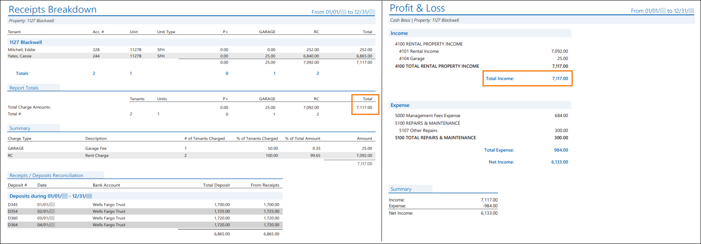
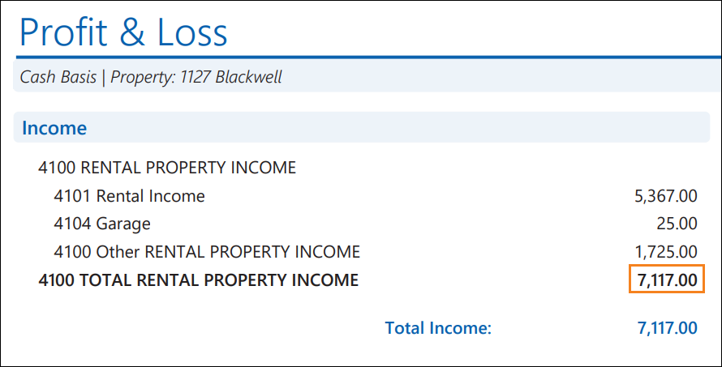

Source: https://rmxhelp.rentmanager.com/Topics/Express/KB/Report-Receipts-Breakdown-Profit-Loss.htm
Receipts Breakdown and Profit & Loss
Both the Receipts Breakdown and Profit & Loss provide the amount of income received. However, each report include transactions from different sources, limit transactions based on their dates, and consider income differently.
Warning
The information contained here does not replace the advice of an accountant. If you are unclear about how to interpret the data presented in the related reports, please consult your accountant.
The Receipts Breakdown report displays the charges to which tenant payments and prepayments were allocated during a date range. In addition, the bank deposits containing each payment displayed in the report are listed in a subreport to help reconcile real-world deposits with those in Rent Manager.
The Profit & Loss report displays income and expense general ledger (GL) accounts for selected properties or owners across a date range. This report also displays the net income to track the financial impact of the selected properties.
Related Privileges
| Group | Privilege | Column |
|---|---|---|
| Letter/Email Templates/Reports/Packets | Run reports | Enabled |
| Run accounting reports | Enabled |
Additionally, on the Reports tab, you must have access to Receipts Breakdown and Profit & Loss.
For more information, refer to Control User Access.
When run with comparable report options, the Receipts Breakdown report's Total column matches the Profit & Loss report's Total Income value.

Report Options
To populate comparable Receipts Breakdown and Profit & Loss reports that complement each other, use the report option combinations listed in the table below. Report options not mentioned do not affect comparability.
| Receipts Breakdown | Profit & Loss | Description |
|---|---|---|
|
Date Range |
Date Range |
The same date range must be set for both reports. |
|
Properties/Owners to Include |
Properties/Owners to Include |
The same Properties, Owners, or property Group must be included in both reports. |
|
n/a |
Cash or Accrual |
The Cash option must be selected. The Receipts Breakdown report automatically populates on a cash basis. |
|
n/a |
Show whole dollar only |
Ensure this option is not checked. The Receipts Breakdown report does not populate with whole dollars. |
Troubleshooting Total Balances That Are Different
While running the reports with the suggested report options above allows the reports to examine the same data, there are other factors that can cause discrepancies between these value totals.
Tenant/Prospect Credits Given During the Reporting Period
The Receipts Breakdown report provides information about payments received from tenants/prospects. A credit (negative charge) given to a tenant/prospect is not a payment and is not included on the Receipts Breakdown report. A credit that is applied to another charge is included on the Profit & Loss as reducing the chart account linked to the credit and increasing the chart account linked to the charge being paid.
To identify credits which can cause discrepancies, run the Credit Detail report. This report displays tenants and prospects with payments or credits on their account during a specified date range, even if they have yet to be applied to charges. In the report options for the Credit Detail report, in the Credits to Include options, you can uncheck PR-Payment Received to ensure that only non-payment credits display in the report. Doing so can make it easier to identify the credits that are generating discrepancies between the Receipts Breakdown and Profit & Loss.
Payments or Credits Dated Before the Reporting Period and Applied to Charges Dated During the Reporting Period
The Receipts Breakdown report does not include payments received before the date range of the report. The Profit & Loss, on a Cash basis, includes charges paid within the date range of the report, even if the payment was received or the credit (negative charge) was given before the report's date range.
For example: a tenant has a credit on their account from an overpayment in a previous month, and that credit is allocated to a charge dated within date range selected for these reports. That allocation is not recorded on the Receipts Breakdown because the credit came from an overpayment outside the reporting period. However, the allocation is recorded on the Profit & Loss.

To identify the payments or credits that cause these discrepancies, from the Profit & Loss report, click on the amount of an income account to drill down to the General Ledger report. In the Type column, look for transaction types such as CRALOC, CRREAL, PYALOC, and REALOC. Payments or credits with these types are dated outside the reporting period and allocated to, at least in part, charges within the Profit & Loss report's date range.
Transactions from Sources Other Than a Tenant/Prospect Account
The Receipts Breakdown report includes transactions entered on tenant/prospect accounts, but not elsewhere in Rent Manager. The Profit & Loss report includes transactions from any sources (e.g., journal entries) where an income or expense chart account was selected. To locate these transactions, from the Profit & Loss report, click on the chart account to drill down to the General Ledger report and in the Type column, look for transaction types such as BEGBAL, BNKDEP, CC CHG, CC CRDT, CHECK, and JOURNL. Transactions with these types are from sources other than tenant and prospect accounts.